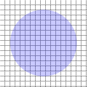
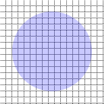

type A cross grid separation
var typeA = new p.tie.CrossSplit($("#type_a").get(0),[0.5,0.5]);
typeA.set(pos.x,pos.y)

var typeA = new p.tie.CrossSplit($("#type_a").get(0),[0.5,0.5]);
typeA.set(pos.x,pos.y)

x.render(ctx,16,16,171,171,-20,-20);